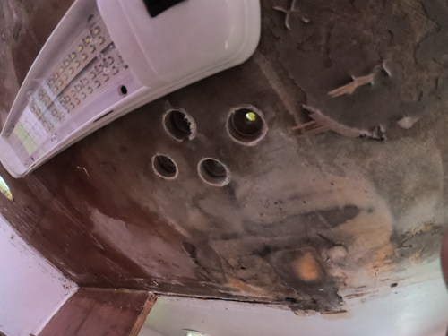

The goal here was to surround any hole through the deck with a cylinder of epoxy. This ensures no water penetration into the core material in the event that the deck hardware is strained to the point where the sealant begins to fail.
Here's what I did:
Video!
 Holes Prepped for Epoxy
After sanding and re-painting the decks, I will re-bed all of the hardware. The best method I have learned of is countersinking holes and using butyl tape. See the very detailed writeup over at https://marinehowto.com/bed-it-tape.